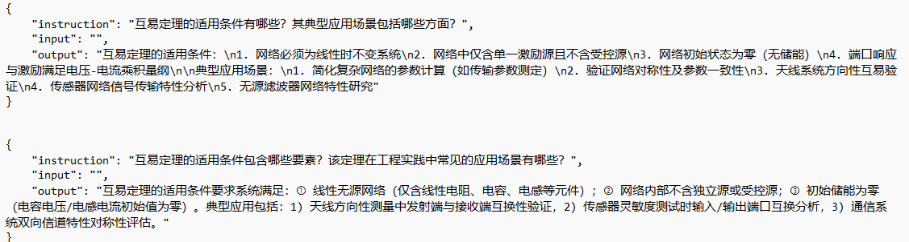

材料与写法 / 周报与指导记录
从周报里找到当时的决定
本章目录
12 月的周报画了一个很大的教学系统，3 月的周报花了一整段写出题为什么会重复。把两份放在一起，就能看清这段毕设里哪件事真正花了时间。
从哪份材料开始读
| 想找的事 | 当时写在哪儿 | 翻到那里看什么 |
|---|---|---|
| 课题怎样定下来 | 《课题申请表》，2024 年 11 月 3 日；《任务书》 | 学校登记的设计周期是 2024 年 10 月至 2025 年 5 月。题目把内容生成、学情分析和交互环境都列进了设想。 |
| 最早的一版构想 | 2024 年 12 月 29 日周报；2025 年 1 月 5 日调研报告；《作图.pptx》 | 看单元测试、学习计划和虚拟教师在早期草图里各占哪一块。 |
| 数字人先跑到了哪一步 | 1 月 12 日、1 月 26 日和 2 月 18 日周报 | 从现成示例的嘴型驱动读起，再看 API 试用和笔记本上的两次模型问答。 |
| 为什么转向整理问答 | 3 月 2 日周报图 9；3 月 9 日周报图 4、图 5 | 前一份是培养方案检索的实际回答，后一份并排展示生成的题和相似题。 |
| 第一轮数据做了多少 | 3 月 16 日周报「构建数据集」「大模型微调」 | 当周报告了 6,895 条问答，微调栏自评完成 25%。同一页还写着下一步怎样安排算力。 |
| 为什么换设备、外接视觉接口 | 《过程指导记录》，4 月 4 日、10 日、15 日 | 依次讨论显存、数字人的实时性和图题入口。 |
| 最终怎样答辩 | 《答辩记录》，5 月 21 日；答辩 PPT 第 8–12 页 | 记录里有老师关于模型来源和前后端的两问，PPT 留下模型选择及评测对照。 |
周报按正文中的日期排列。原目录里 1 月至 3 月的六个文件名沿用了 2024 年，正文、文档修改日期和指导记录对应的是 2025 年。
三月的两条记录怎样连起来
3 月 2 日，我拿一份培养方案试检索。问毕业设计是多少学分，系统找到了“10 学分”，回答却反复写这个数。文档解析时，我还对着 CPU 满载、GPU 空闲的监控来回查过容器配置。这次试验给我留下两个问题。文档怎么查，是检索这条线的事。查到以后怎样给学生讲，是生成这条线的事。

一周后，问题变得具体了。3 月 9 日的周报记了 2,371 对概念问答，也记了冷门知识点下的重复。看下面的两条题干，一条问互易定理有哪些适用条件和应用场合，下一条换了几个字，又问一遍。再读 3 月 16 日的周报，就能看到概念、问答、判断、选择四类题。


四月的日期怎样读
1.5B 和 7B 两组损失图的运行名分别带有 4 月 4 日和 4 月 6 日。4 月 10 日的指导记录已经开始讨论数字人的选型。4 月 30 日签字的中期表仍保留了“接下来做微调”的计划。同一阶段里，曲线给出了具体运行日期，指导记录给出了下一件正在讨论的事。
回到项目主线，可以按这些转折逐段读。